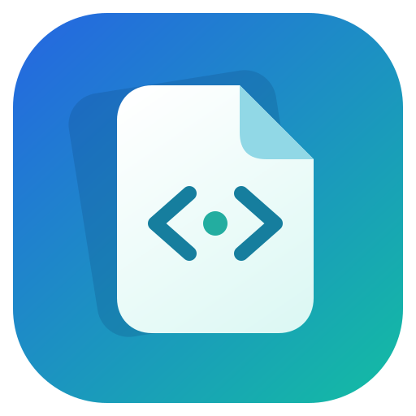

选中，空格，就这样。
Windows 资源管理器、桌面与 macOS Finder 中，选中文件，按下 Space。看完再按一次，回到手头的工作。
macOS 需授权；Linux 使用拖入文件或 Ctrl+O。
瞬览 SpacePreview 下载瞬览找到文件与读到内容之间，
只隔一个空格。
文档、图片、代码、压缩包……
用一个轻巧的窗口，接住你片刻的好奇。
Windows · macOS · Linux / 本地预览
给灵感，也给每一次不经意的发现。
有时候，我们只是想确认一段文字、
看看一张图片，而不必开启整个工作流。
少一点等待，多一点心流。
✓ 选中文件 ✓ 轻按空格 ✓ 即刻浏览
从文件列表到内容本身，
让查看成为一个自然的动作。
Windows 资源管理器、桌面与 macOS Finder 中，选中文件，按下 Space。看完再按一次，回到手头的工作。
macOS 需授权；Linux 使用拖入文件或 Ctrl+O。文档大纲、全文搜索、字体与字号调整。PDF 连续滚动，代码语法高亮，所需工具收进「更多」菜单。
预览不修改原文件，不上传文件内容。文档中的脚本不会执行；切换或关闭时，取消旧的解析任务。
PDF、Word、Markdown、RTF、EPUB
大纲、搜索与阅读；复杂排版可能存在差异。PNG、SVG、PSD、HEIC、TIFF
缩放、旋转；部分设计格式读取内置预览图。TypeScript、JSON、XML、HTML
代码高亮与折叠，网页 / 阅读 / 源码切换。ZIP、7Z、RAR、TAR、ASAR
浏览目录，继续预览内部支持的文件。XLSX、CSV、TSV、SQLite
多工作表、虚拟滚动或记录分页，不执行宏。STL、OBJ、STEP、音视频、字体
模型交互查看；媒体播放取决于系统编码支持。不同格式使用不同预览引擎，支持范围与文件限制有所区别。未支持的文件仍可查看基本信息。
选择你的系统，下载瞬览。
安装包与更新记录由 GitHub Releases 提供。
Windows 10 / 11 · x64
下载安装包 ↗选择 windows-x64-setup.exeApple Silicon / Intel
下载 DMG ↗选择 macos-arm64 / macos-x64x64 · AppImage / DEB
选择 Linux 安装包 ↗拖入文件或 Ctrl+O 开始预览macOS 安装包使用临时签名，尚未进行 Apple Developer ID 签名与公证。查看安装说明 ↗
瞬览是一款桌面软件，文件在本地只读预览，不需要上传。这个网站中的预览是交互式界面示意，不会读取你的文件。
Windows 支持资源管理器与桌面，macOS 已接入 Finder，需要授予辅助功能与 Finder 自动化权限，兼容性仍需真机验证。Linux 当前使用拖入文件或 Ctrl+O，尚未接入文件管理器快捷键。
Word 支持页面、图片、表格和大纲，复杂浮动排版、公式和缺失字体可能影响显示。PowerPoint 原始页面预览需要 Windows 本地安装并激活 Microsoft PowerPoint；其他情况提供文字速览。
单个文件大小上限默认 256 MB，可在偏好设置中调整为 16–1024 MB。不同格式还有独立的解析限制。尚未完成 GB 级真实文件的性能验证，具体边界请查看项目文档。
分享使用体验，提交问题，或者来聊聊你的想法。